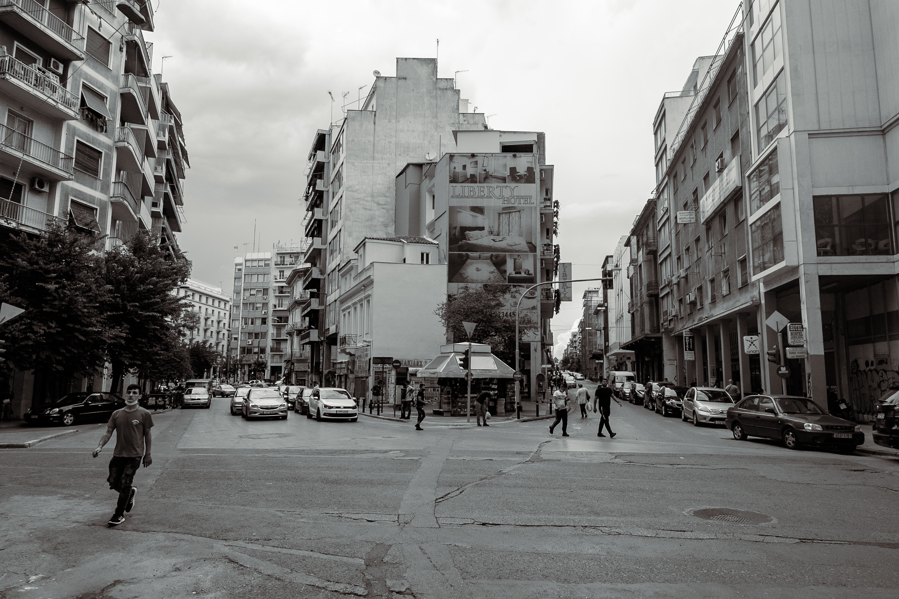
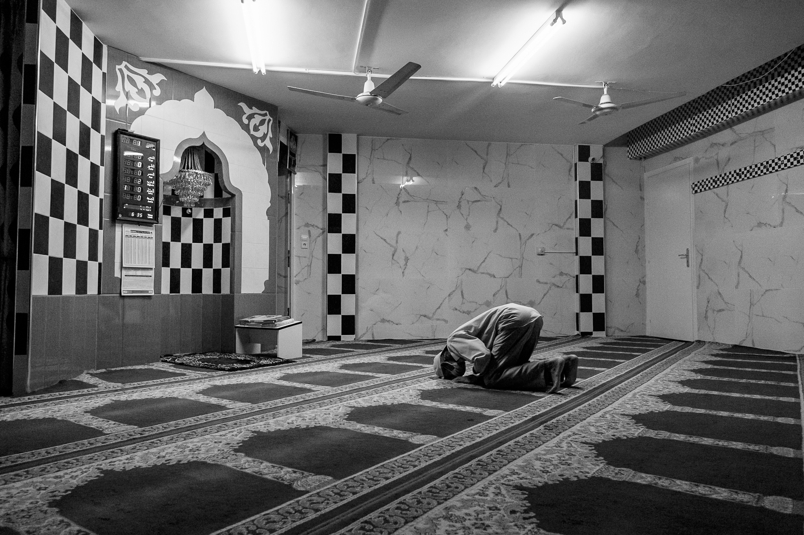
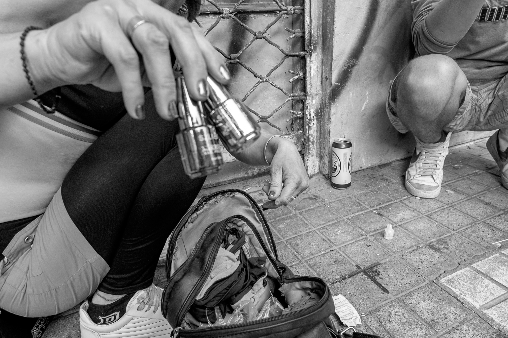
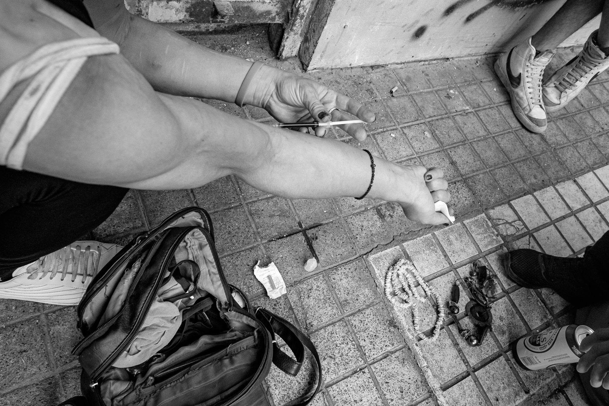
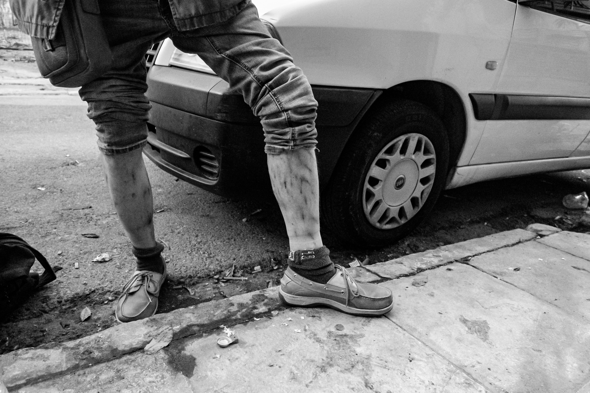
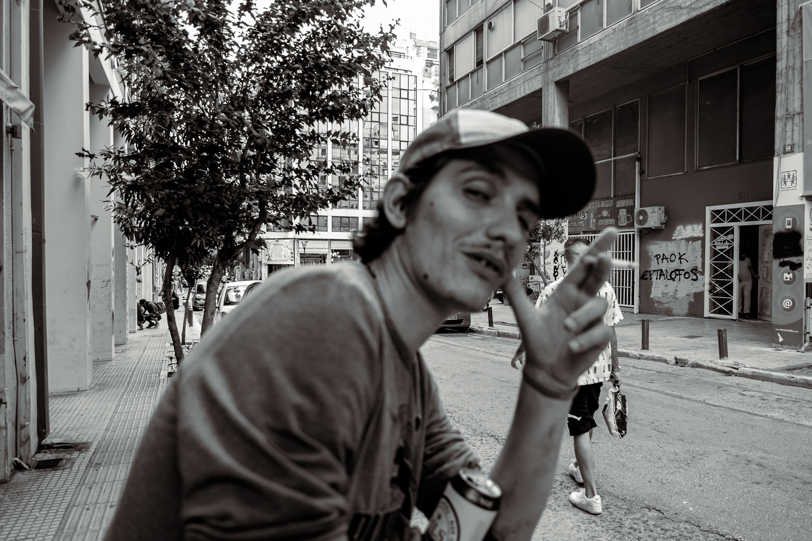

In Omonoia, the neighbourhoods around the buzzing square in the centre of Athens is home to a collage of immigrant life and drug addiction.

Each block reflects the communities of the people staged there. Immigrants from countries of the Balkan Peninsula, Middle East and Central Asia coexist creating their own hubs. Markets with signs in languages other than Greek, restaurants hosting flavours not native to the Greek palate and makeshift places of prayer can be found.

However, there are places with a completely different feeling. The signs of poverty, prostitutions and drug addiction are evident in every corner of the north-west area around the square. Persons can be seen under the influence of drugs, mainly sisa (methamphetamine based drug adultered with many additives such as battery liquids, engine oil among other ingredients. Consumed usually by smoking the mixture in a glass pipe) and speedball (combination of heroin and cocaine with injection as main method of usage), either sitting on the steps of narrow entrances of the buildings or walking while muttering. The litter-filled streets and alleys signal what kind of area someone is entering.
Alexandra, a nurse by training, came to Greece from the former Soviet Union when she was 18 years old. “It was always my dream,” she says while searching for a healthy vein to inject her dose. “My mother, during her pregnancy, was reading a lot of stories about Greek mythology,” she continues, smiling. Her first encounter with heroin was when a past boyfriend provided her with it, without ever telling her it was heroin. She used it, thinking it was cocaine. Later on, she joined a rehab program, managed to get clean, and secured a job as a cleaning lady. One of the persons she was working for was an old dealer of hers. As a reward for her trustworthiness, he once offered her a free dose along with her payment. She said, laughing, “Can you trust the goat to keep an eye on the cabbage?”

Patiently, switching arms and applying pressure on her veins with her colourful nails, she continues: “In the past I was wondering, how can a woman prostitute herself? How can they bear it?” Now, she does the same to earn some money, supporting not only their family but also their drug habits. She excused herself and explained she had to go to work, as a man was waiting for her. While gathering her stuff, she said, “Nobody is responsible for this, not my mother, not anyone. It is my fault.”

Though for Michalis, a 42-year-old man working in the public sector, the case was different. He originally got involved in drug use because of peer pressure. Starting with cannabis at 14, by the time he turned 18 he was already using speedball. After many years his life changed — he got clean, married, and his son was born. But it didn't last. Michalis had to have an operation and was given opioid painkillers. The result was a relapse with serious consequences for his family life. When his wife learned about it, she decided to take their son and leave. For Michalis that was a turning point, although he is still stuck in the habit of drug use. “I'm going to see my son now. I don't want him to see me in pain. I had to get fixed,” he told right after he finished injecting.

Standing opposite one of the “per-hour” hotels in the area, waiting for Alexandra to finish with her client, Giorgos picks a small flower for her. Reflecting on his past and present life, he emphasises that they both try to make sure to always provide for their kids. “Shall I leave my children without diapers!?” he says, as his gaze wanders. “We are hungry. That's why my wife is working, because we are hungry!”

EDIT: e.g. "All names have been changed to protect the persons."